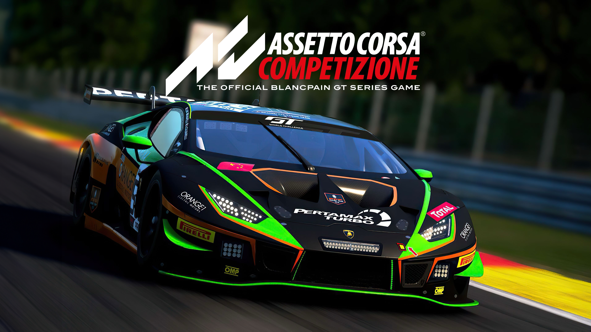
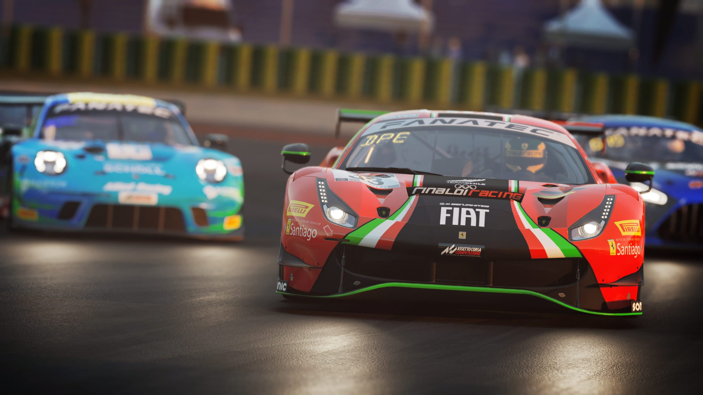
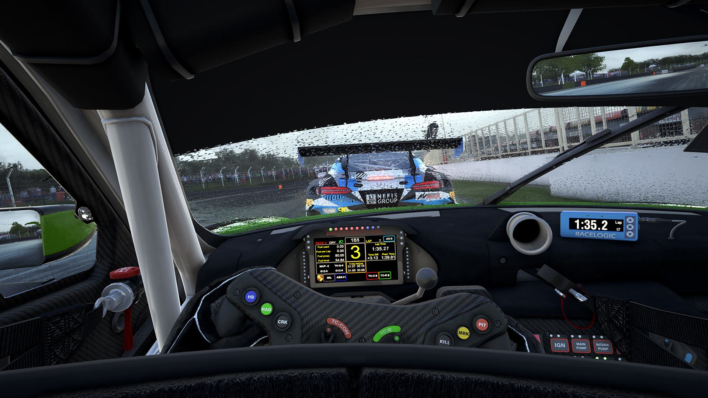

O que é o jogo?
Assetto Corsa Competizione é um jogo de corridas de carros feito pela empresa italiana Kunos Simulazioni. É um simulador, ou seja, tenta imitar ao máximo a condução de um carro de corrida verdadeiro. O jogo saiu em 2019 para PC.
Este é o jogo oficial do campeonato GT World Challenge, por isso tem carros, equipas, corredores e pistas reais.
Principais características
- Carros GT3 e GT4 de marcas como Ferrari, Porsche, BMW e Lamborghini.
- Pistas reais, como Spa-Francorchamps, Monza e Nürburgring.
- Meteorologia dinâmica, com chuva e corridas de dia e de noite.

